Запрос клиента,
CRM и запуск
работы в проекте
Продолжим тот же проект: проведём запрос заказчика через CRM, свяжем его с подготовленным планом и оформим запуск работы для команды.
- Где работаем
- Существующий проект «СЕВЕР»
- Основание
- Требования и план тем 3–4
- Результат
- Связанный маршрут от клиента до результата
Клиент, CRM, запрос и уточнение состава запуска.
Задача проекта, доска, календарь, план и роли.
Документы, коммуникации, автоматизация, процессы и отчёты.
01Продолжаем проект «СЕВЕР»
В предыдущих практиках команда создала проект, уточнила требования и составила план. Лабораторная 5 добавляет клиентский контур к существующим записям.
Что уже есть и что добавится
Основание
- проект «СЕВЕР»;
- требования R1–R5 версии 2;
- проверки P1–P5;
- план А/А1/А2/Б/В/Г;
- ответственные и ручной порядок работ.
Новый слой
- клиент в CRM;
- запрос на запуск;
- уточнение и решение;
- координационная задача;
- представление, роли и результат.
Новая задача связывает работу с клиентским запросом, но не заменяет карточки темы 4.
Проверяем исходные записи
- Откройте проекты.
В меню портала выберите «Проекты» и найдите существующий проект «СЕВЕР». В проверенном портале отображаются два проекта; используйте тот, в котором находится план темы 4.
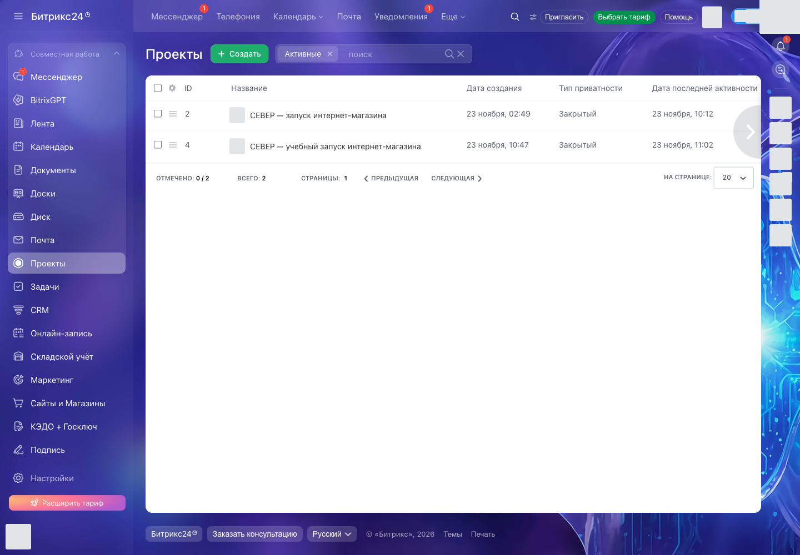
Список проектов: найдите существующий «СЕВЕР» и откройте его задачи. - Проверьте задачи проекта.
Откройте список задач и найдите общую задачу А, подзадачи А1 и А2, а также Б, В и Г. Чек-лист В должен оставаться пустым: тема 4 создавала план будущей работы.
- Скопируйте ссылки.
Сохраните ссылки на задачу с требованиями и на общую задачу А. Они понадобятся в CRM-запросе и в координационной задаче.
02Клиент и CRM
CRM хранит сведения о клиенте и обращении. Проект и задачи фиксируют действия команды по этому обращению. Разделение записей помогает не потерять запрос среди внутренних карточек.
- КлиентКомпания или контакт
- CRM-запросСделка или лид
- Задача запускаПроект «СЕВЕР»
- РезультатОтвет заказчику
В проверенном портале открываются раздел CRM, «Сделки», «Лиды», «Клиенты» и «Роботы». В этой лабораторной используйте тот тип записи, который доступен в вашем интерфейсе и позволяет сохранить клиента, запрос и следующий шаг.
Делаем
- Откройте CRM.
В левом меню выберите «CRM». Перейдите в «Клиенты» или в тот подраздел, где ваш портал хранит контакты и компании.
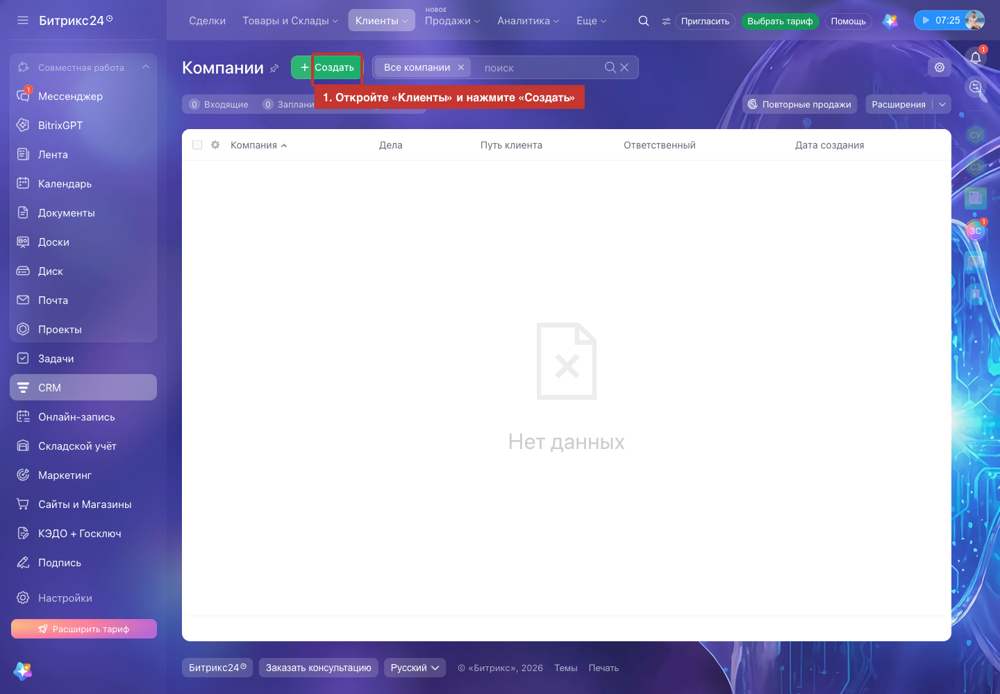
Что на кадре: список «Компании» и кнопка «Создать», с которой начинается создание клиента. - Создайте запись клиента.
Используйте безопасное название без телефона, адреса и почты. На кадрах показана компания для проверки резервирования.
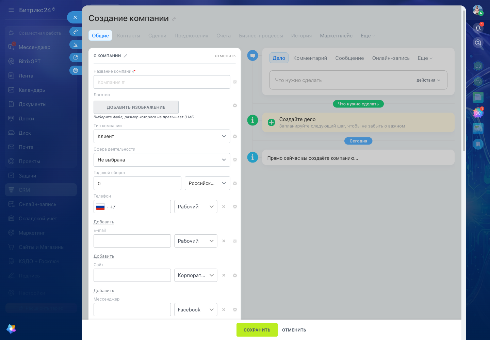
Что на кадре: форма новой компании до заполнения; обязательное поле — название компании. 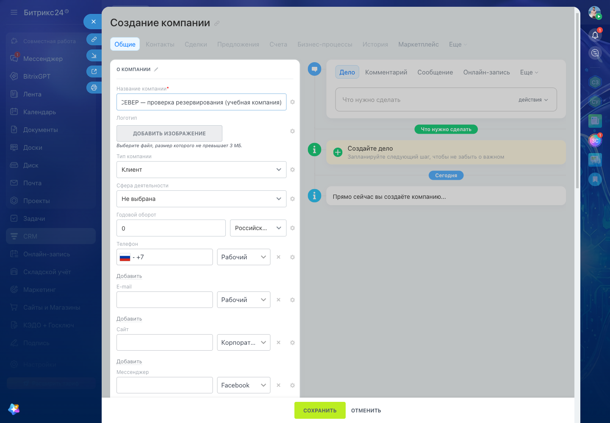
Что на кадре: название компании заполнено безопасными данными перед сохранением. - Проверьте сохранение.
Сохраните форму, вернитесь в список и убедитесь, что компания появилась в нём. После этого клиент доступен для связи со сделкой или лидом.
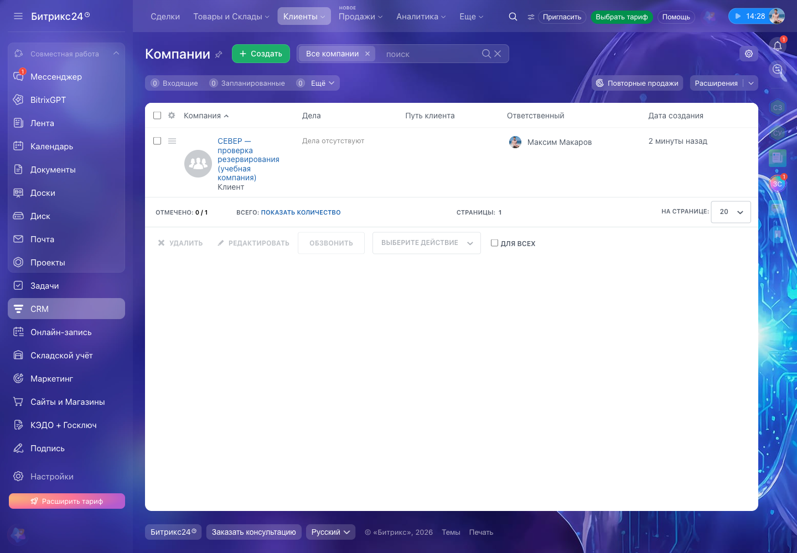
Что на кадре: созданная компания появилась в списке CRM после сохранения.
03Запрос заказчика
CRM-запись содержит конкретный запрос вместо общего названия «сделать магазин». В этом сценарии заказчик просит подготовить запуск спланированной части проекта.
Если CRM использует сделки, запрос можно сохранить в новой сделке. Если в вашем интерфейсе удобнее использовать лид, сохраните тот же текст в лиде и укажите, что следующий шаг — уточнить состав запуска и связать запись с проектом.
Делаем
- Откройте сделки или лиды.
В CRM выберите доступный тип запроса и нажмите «Создать». В показанном портале открыт раздел «Сделки».
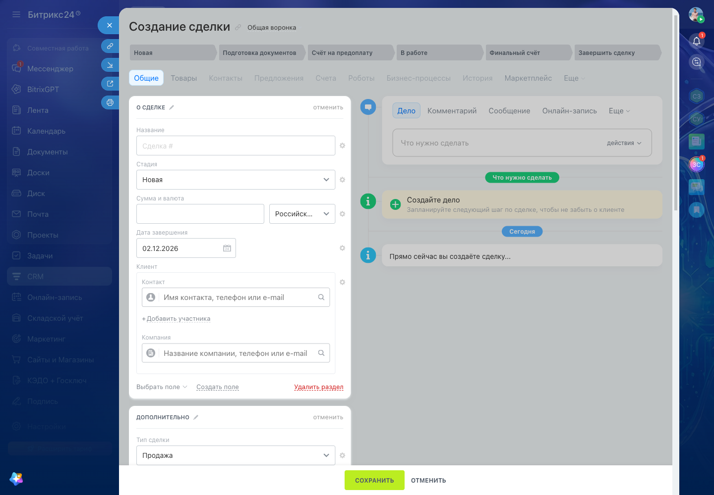
Что на кадре: новая сделка до заполнения названия и выбора компании. - Свяжите запрос с клиентом.
В поле компании выберите сохранённую CRM-запись. Введите название запроса: Запрос на проверку резервирования — СЕВЕР. В следующем действии укажите согласование запуска с заказчиком.
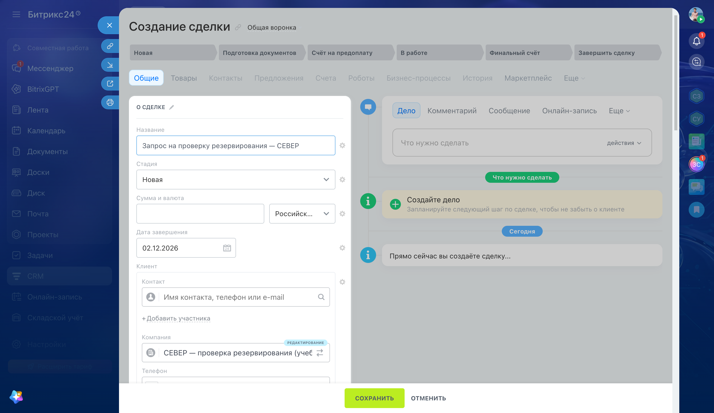
Что на кадре: в сделке указаны название запроса и созданная компания-клиент. - Сохраните и повторно откройте запрос.
После сохранения обновите страницу. Сверьте название сделки, запись о её создании и поле компании. Добавьте текст запроса и ссылку на координационную задачу только после того, как они станут видны в карточке.
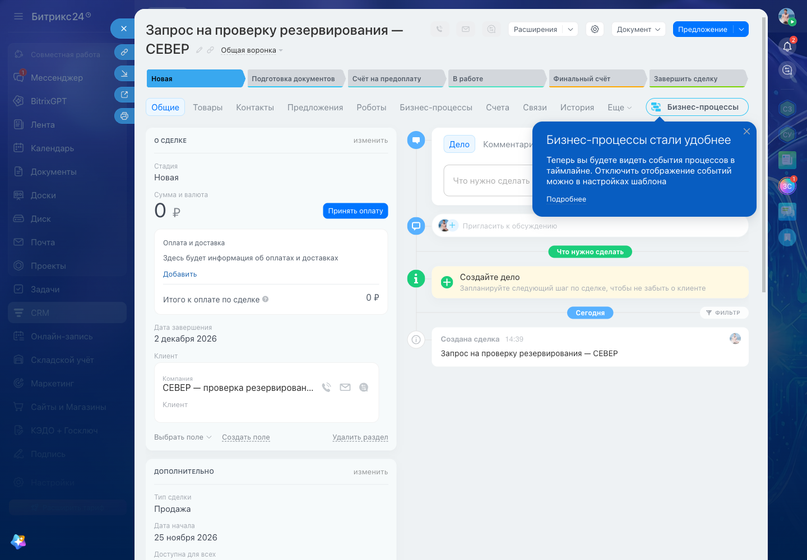
Что на кадре: сохранённая сделка; слева видно поле компании, справа — запись о создании сделки.
04Уточнение запроса
В теме 3 требования магазина уже были уточнены. В этой части фиксируется готовность клиентского запуска: что можно показать заказчику и по каким признакам он примет результат.
| Вопрос | Зачем нужен | Запись решения |
|---|---|---|
| Что показываем заказчику? | Разграничить план и проверенный результат. | Описание запуска и ссылки на задачи. |
| Какие работы входят в запуск? | Зафиксировать состав работ. | А1, А2, Б, В и Г как входы плана. |
| Кто принимает результат? | Назначить ответственную роль. | Заказчик принимает описание результата. |
| Что остаётся за границами? | Зафиксировать исключения. | Границы темы 3 и 4 сохраняются. |
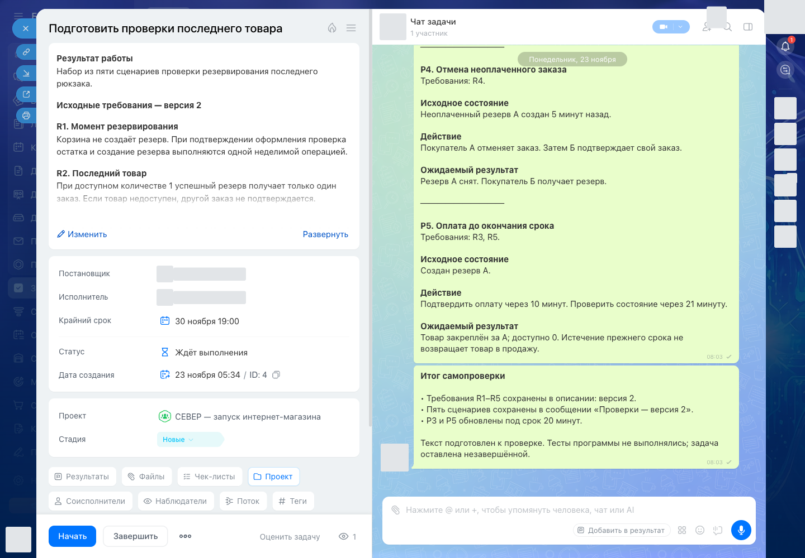
Это сообщение не заменяет описание задачи с требованиями. Оно показывает, какое решение принято для клиентского запуска.
05Задача запуска в проекте
Теперь запрос из CRM превращается в работу команды. Создадим одну новую задачу в существующем проекте. Она координирует запуск и ссылается на карточки темы 4; она не дублирует их содержание.
Подготовить запуск резервирования для согласования с заказчиком
Делаем
- Откройте задачи проекта.
Вернитесь в проект «СЕВЕР» и выберите «Задачи». Создание начинайте из списка проекта, чтобы новая карточка получила правильную привязку.
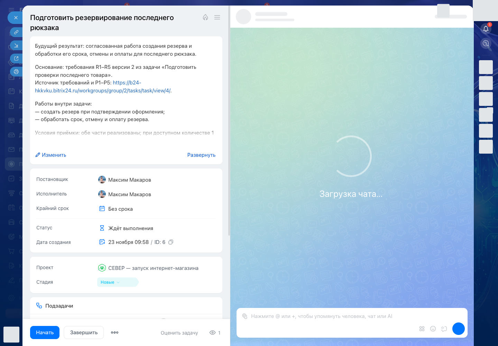
Задачи проекта: откройте список и добавьте координационную задачу, сохранив связь с «СЕВЕР». 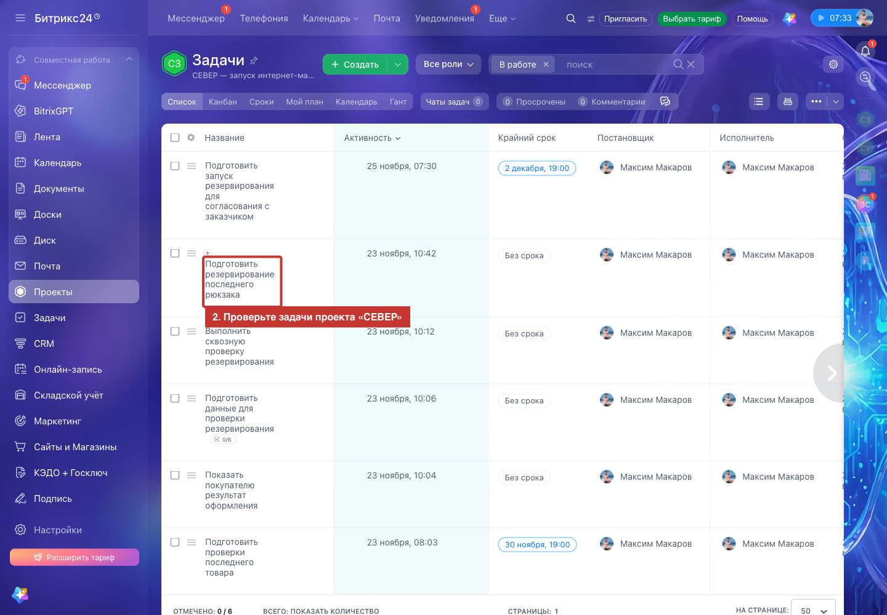
Что на кадре: список задач проекта и существующая карточка, которую нужно оставить без пересоздания. - Вставьте описание.
Скопируйте блок выше. Замените квадратные скобки действующей ссылкой на CRM-запрос. Добавьте ссылки на источник требований и общую задачу А.
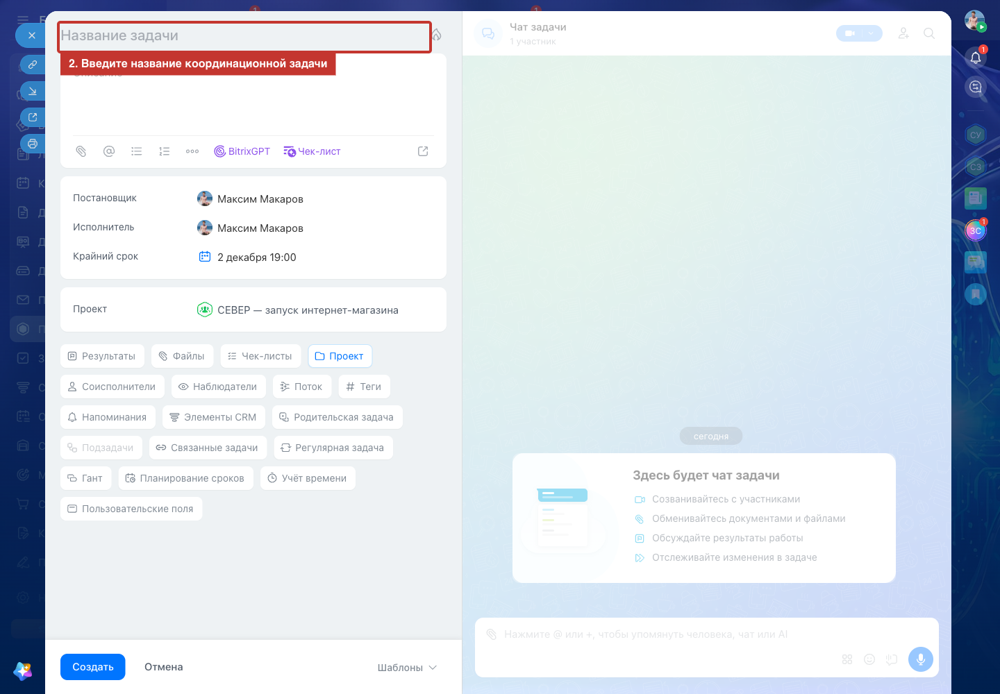
Что на кадре: новая форма задачи; рамка показывает поле названия, с которого начинается заполнение. - Назначьте координатора.
В индивидуальной работе назначьте себя. В командной работе выберите участника, который связывает CRM и проект.
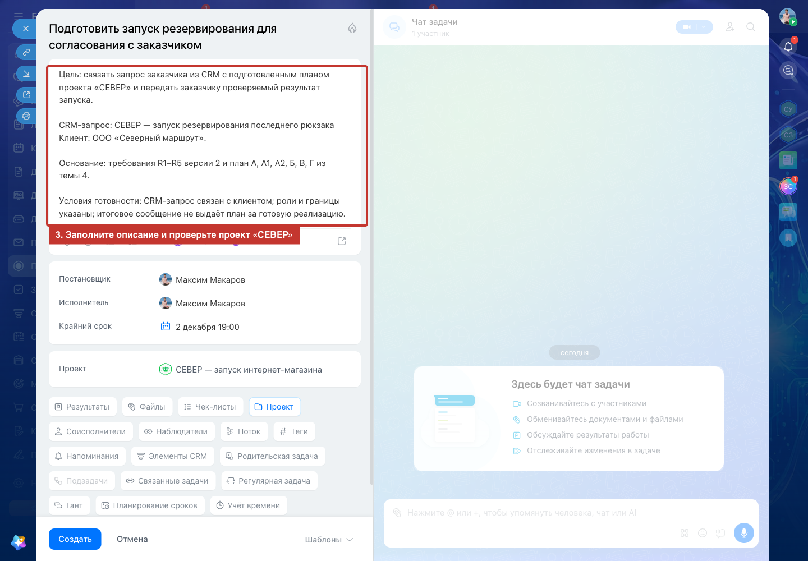
Что на кадре: название и описание задачи заполнены; в тексте зафиксированы CRM-запрос, клиент, требования и план. - Оставьте задачу незавершённой.
Эта карточка фиксирует подготовку запуска. Завершение задачи не доказывает, что магазин реализован или проверен.
- Проверьте сохранение.
Обновите страницу и откройте задачу из списка проекта. Снимите кадр с названием, проектом, ответственным и ссылками.
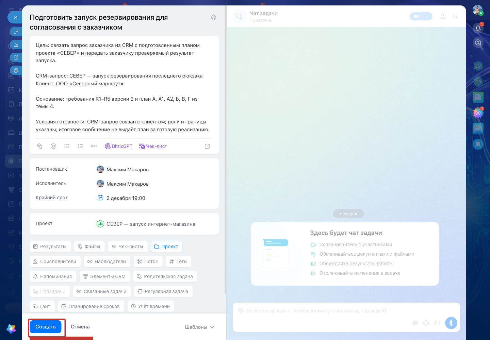
Что на кадре: перед сохранением сверяются название, описание и кнопка «Создать». 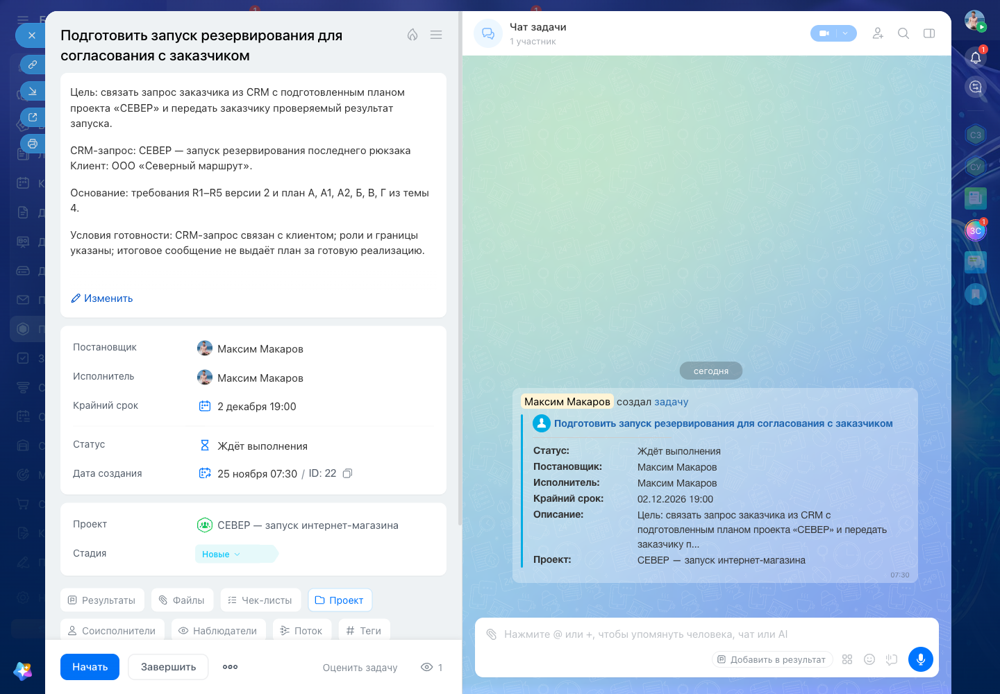
Что на кадре: после сохранения открыта карточка задачи с описанием и привязкой к проекту.
06Представления задачи проекта
Список задач показывает записи. Отдельный раздел «Доски» работает независимо от задач проекта. Календарь и Гант показывают сроки, если представление доступно. Документы хранят материалы. Кадры ниже показывают вход в эти разделы; результат проверки фиксируется отдельным кадром студента.
Задачи
В разделе задач видны список, сроки, проект, роли, Гант и пункт календаря.
Доски
Раздел «Доски» открывается и предлагает создать самостоятельную доску. Он не подтверждает канбан задач проекта.
Документы
Можно открыть документы и создать документ, таблицу, презентацию или доску. Связь документа с проектом проверяйте после сохранения.
Календарь, Гант и канбан
Эти представления открывайте из задач своего проекта. Их доступность и состав записей зависят от портала и тарифа.
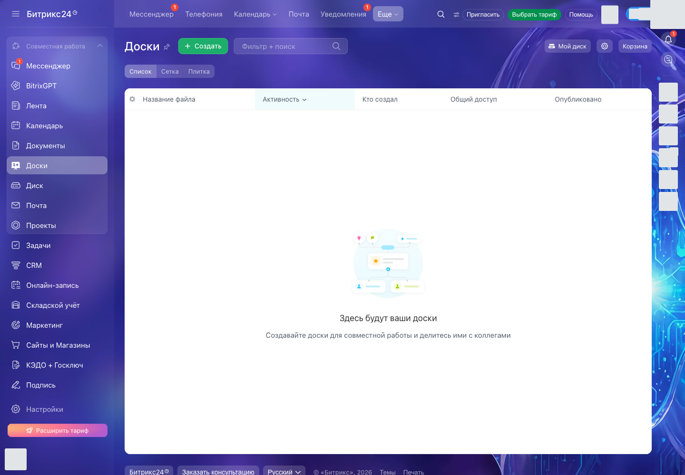
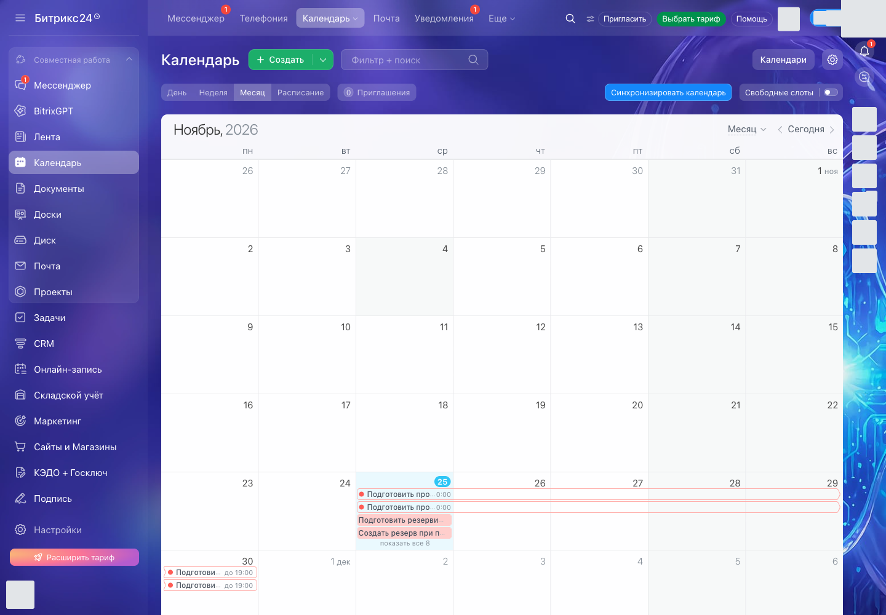
Делаем
- Проверьте доступные представления.
Последовательно откройте список задач, вкладку «Канбан» в задачах проекта, календарь и Гант. Для каждого представления запишите, открывается ли оно и какие элементы проекта видны. Отдельный раздел «Доски» фиксируйте как самостоятельный инструмент, а не как канбан задач проекта.
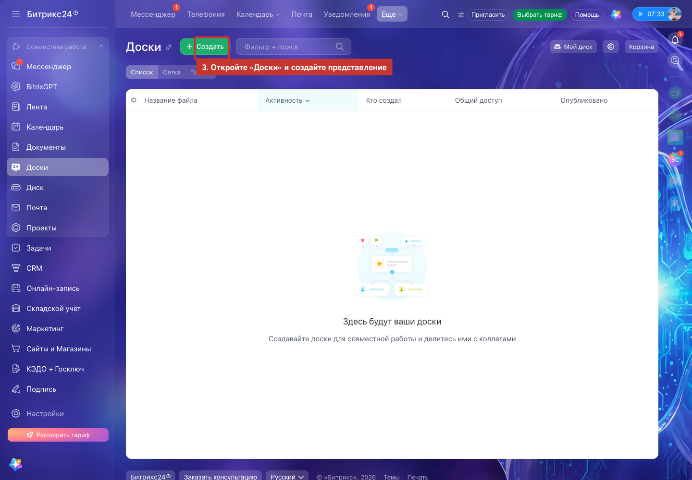
Что на кадре: в разделе «Доски» выделена кнопка создания самостоятельной доски. 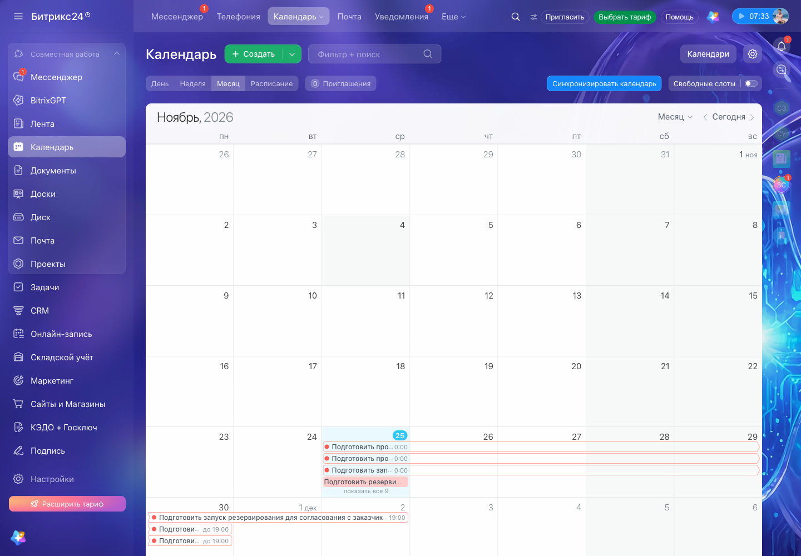
Что на кадре: открыт календарь; зафиксируйте отдельным кадром, отображается ли в нём задача запуска. 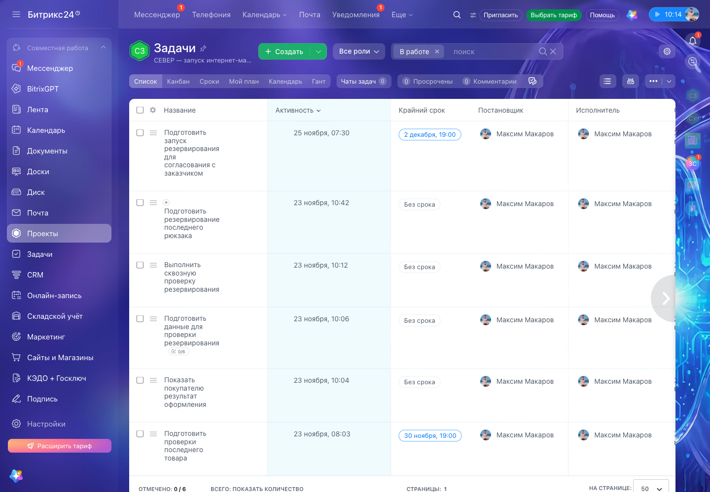
Что на кадре: вкладка «Канбан» открывается внутри задач проекта. 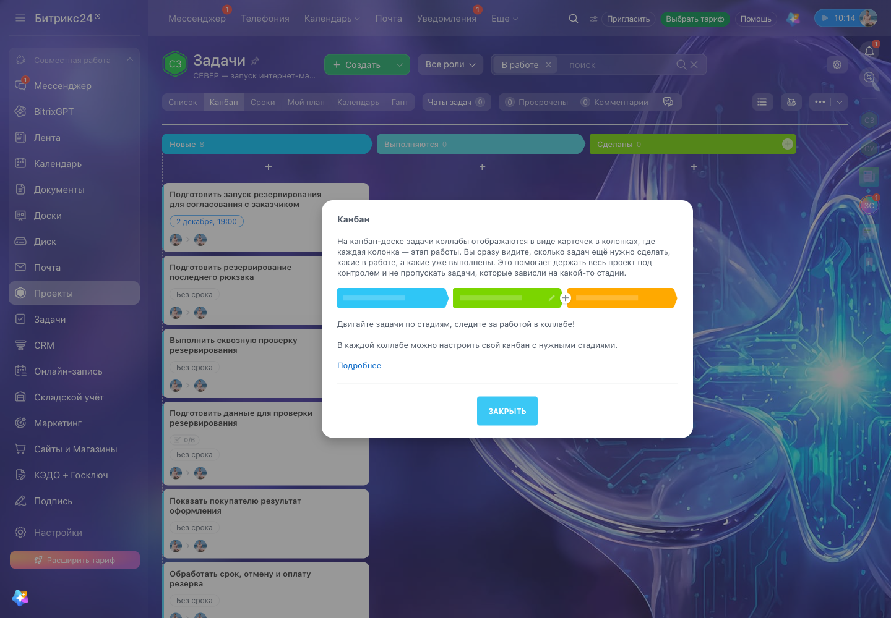
Что на кадре: существующие задачи проекта показаны карточками в этапах канбана. 
Что на кадре: календарь задач проекта показывает записи со сроками; задача без срока в сетке не отображается. 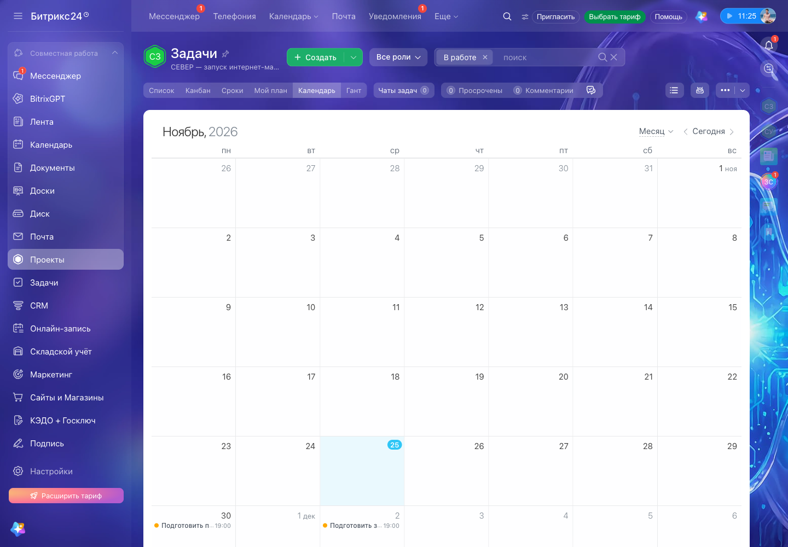
Что на кадре: вкладка «Гант» находится рядом с календарём в задачах проекта. 
Что на кадре: диаграмма Ганта открыта для существующих задач проекта. - Сохраните документ.
В разделе «Документы» создайте или откройте демонстрационный бриф запуска. В нём должны быть клиентский запрос, границы, ссылки на требования и список результата. Если совместная связь с проектом недоступна, добавьте ручные ссылки и отметьте ограничение.
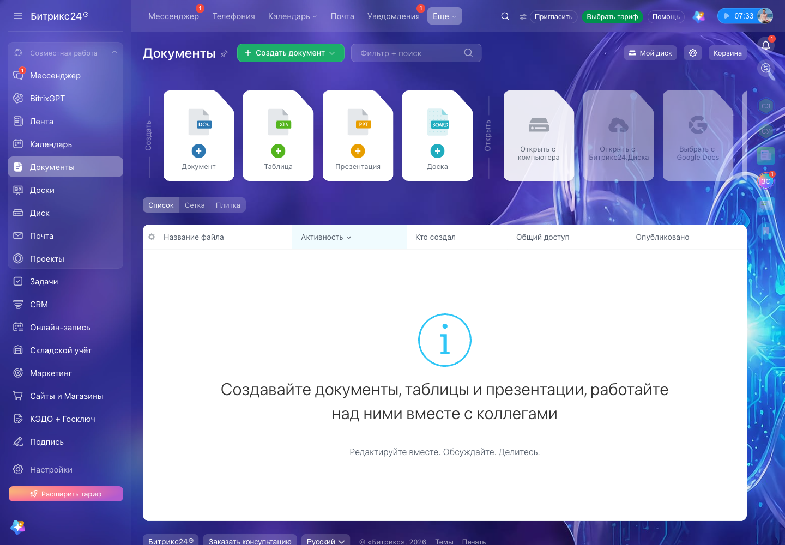
Что на кадре: открыт раздел документов; здесь создаётся или открывается бриф запуска. - Проверьте коммуникацию.
Сохраните итоговое сообщение в задаче запуска или в доступном обсуждении. Не отправляйте его реальному клиенту.
- Сохраните доказательство.
В отчёте укажите результат каждого представления: доступно, недоступно или доступно только после ограничения тарифа. Недоступный пункт не заменяйте макетом.
07Роли и коммуникации
В теме 4 ответственные были назначены карточкам. В лабораторной 5 добавляется другая плоскость: кто отвечает за путь клиентского запроса.
| Роль | Ответственность в этой работе | Где видно |
|---|---|---|
| Заказчик | Формулирует запрос и принимает описание результата. | CRM-карточка и итоговое сообщение. |
| Координатор | Связывает CRM с проектом и следит за передачей. | Ответственный задачи запуска. |
| Аналитик | Уточняет запрос и сопоставляет его с R1–R5. | Уточнение и описание задачи. |
| Исполнитель | Готовит результат конкретной карточки плана. | А1, А2, Б, В или Г. |
| Проверяющий | Сверяет результат с P1–P5 и условиями готовности. | Задача Г и итоговая запись. |
Если вы работаете один, роли не исчезают. Назначьте себя исполнителем, а в описании отдельно укажите, какие решения относятся к заказчику, а какие — к команде.
Коммуникация
В задаче запуска оставьте одно итоговое сообщение. Оно должно содержать ссылку на CRM-запрос, ссылку на источник требований, ссылку на план темы 4 и честное состояние результата.
08Проверяем разделы экосистемы
В портале доступны разделы документов, автоматизации, бизнес-процессов и BI Конструктора. В этой части проверяется, помогает ли каждый раздел зафиксировать маршрут запроса.
| Раздел | Результат проверки | Что фиксировать |
|---|---|---|
| Документы | Раздел открыт; бриф сохранён, если это доступно. | Связь документа с CRM и проектом проверяется отдельно. |
| Автоматизация | Открыт робот или шаблон без запуска действия. | Доступность зависит от тарифа; автоматическое создание задач проверяется отдельно. |
| Бизнес-процессы | Открыт раздел и безопасный шаблон, если он доступен. | Автоматическое согласование подтверждается только выполненным процессом. |
| BI Конструктор | Открыт отчёт или сформулирован вопрос для отчёта. | Новый отчёт и его показатели подтверждаются отдельным кадром. |
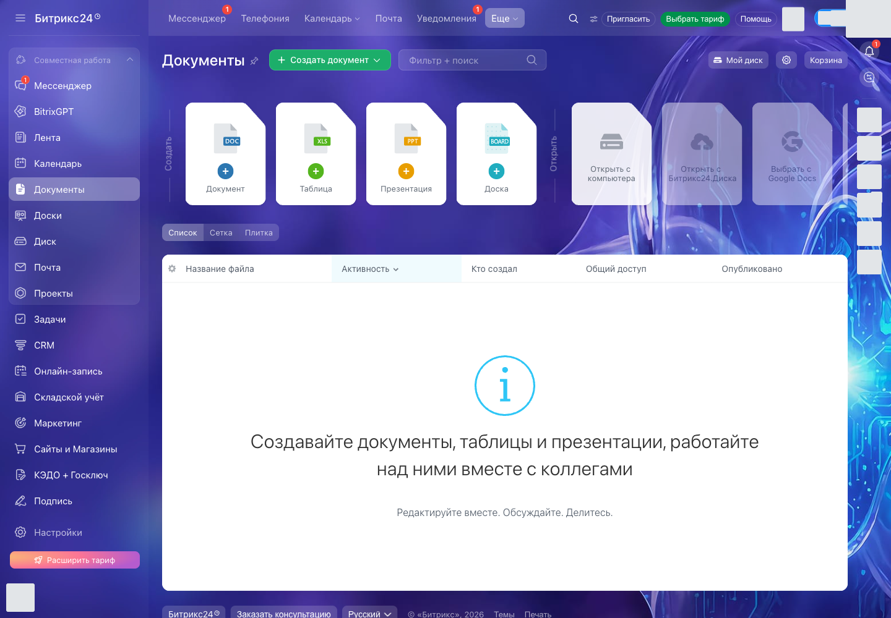
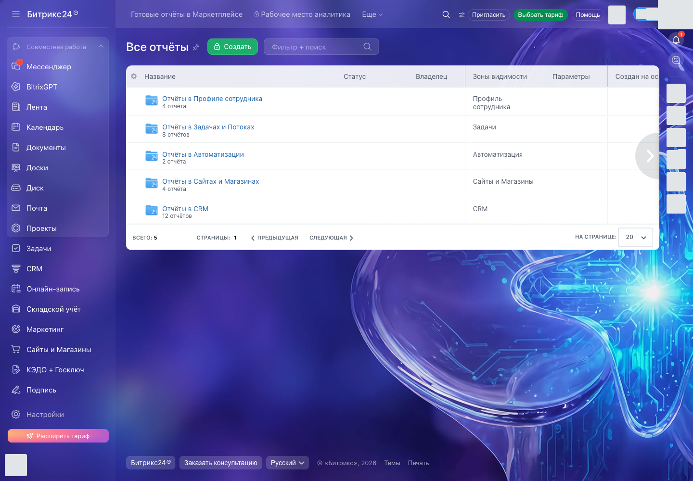
- Проверьте документы.
В разделе «Документы» создайте или откройте демонстрационный бриф запуска. В нём должны быть клиентский запрос, границы, ссылки на требования и список результата. Если совместная связь с проектом недоступна, добавьте ручные ссылки и отметьте ограничение.
- Проверьте коммуникации.
Сохраните итоговое сообщение в задаче запуска и проверьте доступный канал коммуникации в CRM: комментарий, дело или другое предусмотренное порталом действие. Не отправляйте его реальному клиенту.
- Проверьте автоматизацию.
Откройте раздел «Автоматизация» или пункт «Роботы». Зафиксируйте доступный тип правила и условие запуска. Не запускайте действие, которое отправляет внешние уведомления или создаёт лишние задачи.
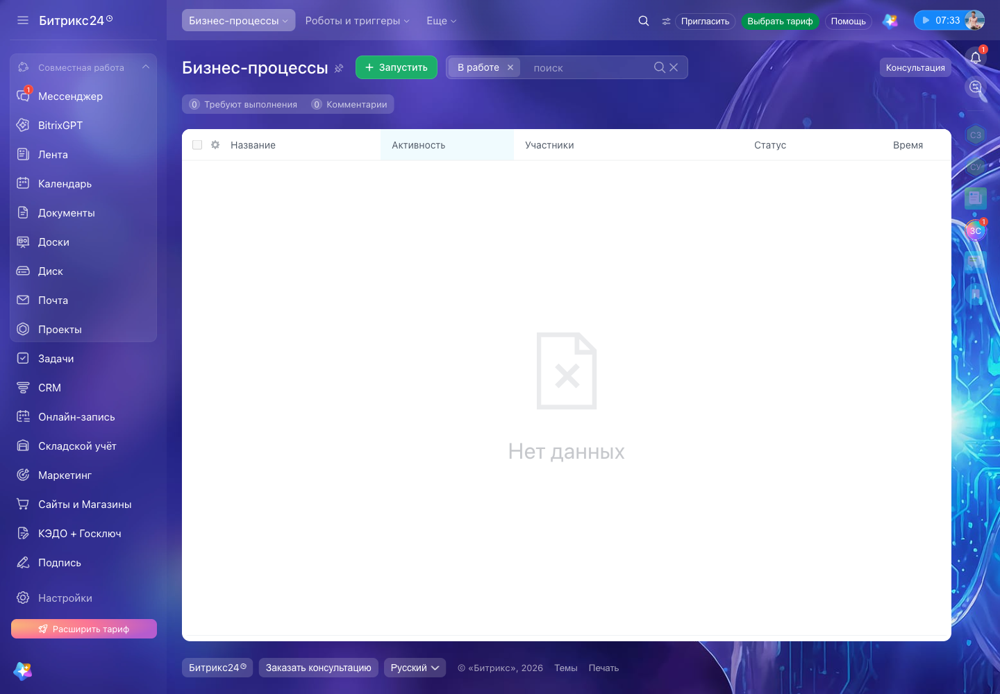
Что на кадре: открыт раздел автоматизации; сначала фиксируется доступное правило, затем проверяется его безопасный режим. - Проверьте бизнес-процессы.
Откройте «Бизнес-процессы». Если доступен безопасный демонстрационный шаблон, покажите его связь с согласованием запроса; если шаблон недоступен, сохраните отметку об ограничении и опишите ручной маршрут согласования.
- Проверьте отчётность.
Откройте «BI Конструктор» и найдите доступный отчёт по задачам, CRM или сотруднику. Зафиксируйте, какой вопрос он помогает проверить: где находится запрос, кто отвечает и какой результат ожидается.
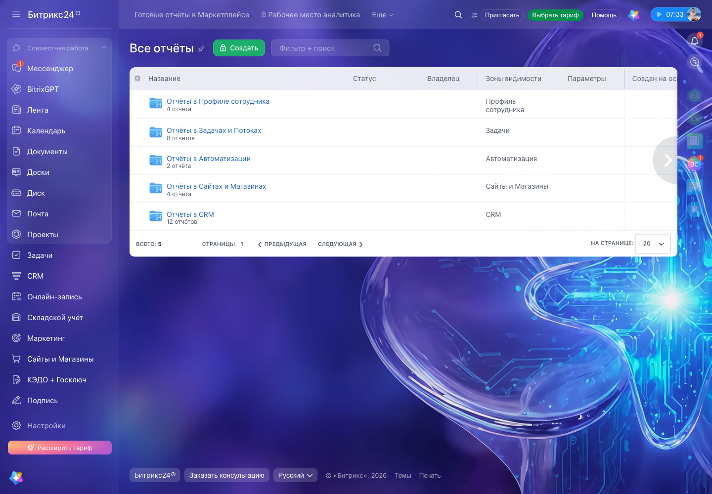
Что на кадре: открыт BI Конструктор; выберите отчёт и запишите вопрос, на который он отвечает. - Сохраните доказательства всех разделов.
В отчёте укажите результат каждой проверки: доступно, недоступно или доступно только после ограничения тарифа. Недоступный пункт не заменяйте макетом.
09Что предъявить
Сдача показывает трассировку запроса через экосистему. Кадры лабораторной служат ориентиром интерфейса; каждый результат своей работы подтверждайте отдельным сохранённым кадром.
- Сохранённая CRM-карточка клиента.
- CRM-запрос с названием и связанной компанией; текст запроса, границы и следующий шаг добавлены, если поле доступно.
- Уточнение запроса с решением о составе запуска.
- Координационная задача в существующем проекте «СЕВЕР».
- Ссылки на источник требований и карточки плана темы 4.
- Назначенные роли и подготовленное итоговое сообщение для заказчика.
- Проверка списка задач, канбана задач проекта, календаря и Ганта или отметка об ограничении каждого вида.
- Документ с брифом или протоколом запуска, если создание документа доступно.
- Результат проверки комментария, дела или другого канала CRM без внешней отправки.
- Проверка раздела автоматизации или роботов без запуска опасного действия.
- Проверка бизнес-процессов с безопасным шаблоном или описание ручного маршрута.
- Открытый BI Конструктор и вопрос, который должен покрыть отчёт.
- Краткая отметка о выполненных действиях, ограничениях тарифа и будущей работе.
Для проверки откройте CRM-запрос, затем перейдите по ссылке к задаче запуска. В задаче должны быть указаны проект «СЕВЕР», связанные карточки темы 4 и результат для заказчика. Если ссылка ведёт в закрытый портал, рядом добавьте название записи и краткое пояснение.
Критерий сдачи: по материалам можно восстановить путь запроса — кто обратился, что попросил, что уточнили, какую работу запустили, кто отвечает и что получит заказчик.
10Короткий словарь
- CRM
- Раздел для хранения данных о клиентах и работе с обращениями, сделками и следующими действиями.Клиент → запрос → следующий шаг
- Лид
- CRM-запись потенциального обращения, которое ещё нужно обработать и уточнить.Запрос → квалификация → решение
- Сделка
- CRM-запись работы с клиентом, у которой есть этапы и ожидаемый результат.Клиент → договорённость → запуск
- Трассировка
- Связь записи с её источником, следующей работой и результатом.CRM → задача → результат
- Координационная задача
- Задача, которая связывает участников и результаты нескольких работ, не подменяя их.Запрос → план → согласование
- Представление
- Способ посмотреть одну работу: список, доска, календарь или временной план.Одна запись → разные виды
- Роль
- Ответственность участника за решение, работу или приёмку результата.Координатор ≠ исполнитель ≠ заказчик
- Бизнес-процесс
- Настроенная последовательность действий и согласований внутри сервиса.Сначала проверить доступность и последствия запуска
Источники и ограничения
- Текущий портал Битрикс24: в меню и рабочих разделах проверены CRM, Проекты, Задачи, Доски, Документы, Автоматизация и BI Конструктор.
- Наличие пункта меню не доказывает доступность каждого действия или тарифа. В сдаче указывайте только реально открытые и проверенные функции.
- Основание проекта — практики 2–4 этой дисциплины: «СЕВЕР», R1–R5, P1–P5 и план А/А1/А2/Б/В/Г.
- Все данные клиента в учебной работе должны быть безопасными и не содержать настоящие телефоны, почту, адреса и личную переписку.